I conducted a comprehensive security vulnerability assessment of MongoDB deployed within Linux container environments. This project evaluated the security posture of containerized MongoDB instances by leveraging industry-standard vulnerability scanning tools and analyzing the results to identify security gaps.
The assessment was performed on a multi-layered infrastructure: MongoDB ran within Singularity containers on an Ubuntu environment, which itself was virtualized on macOS using VirtualBox. This architecture provided a realistic testing ground for assessing container security in a virtualized environment.
I established a virtualized environment to support the vulnerability assessment testing infrastructure:
Step 1: Ubuntu Installation on VirtualBox
I installed Ubuntu as a guest operating system on VirtualBox running on macOS. This provided the foundational Linux environment needed for container orchestration.
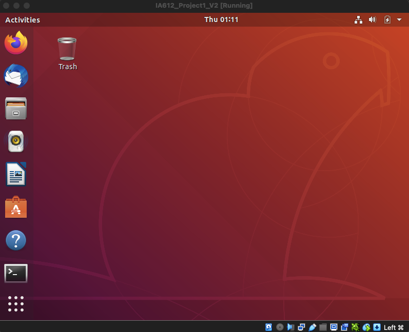
Step 2: Docker Installation
I installed Docker via command line on the Ubuntu environment. Docker serves as the image repository and foundation for container-based deployments, providing access to pre-built MongoDB container images from Docker Hub.
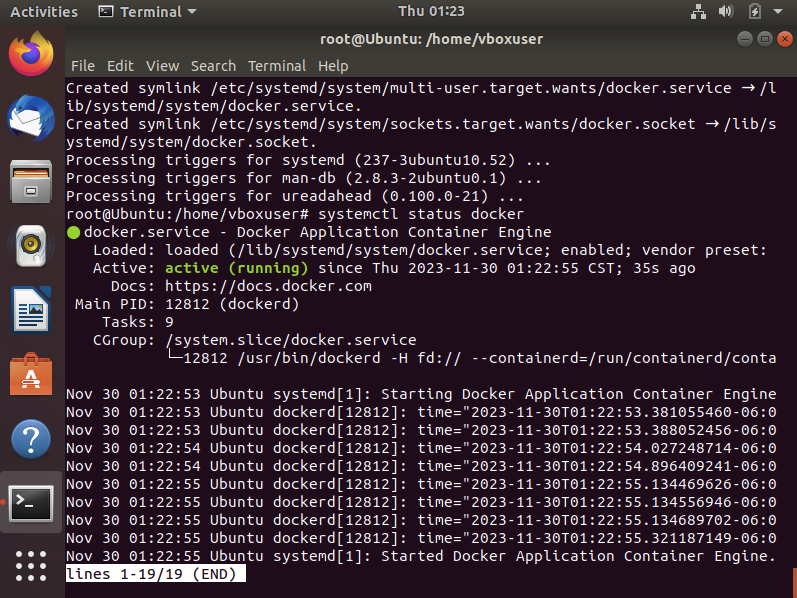
Step 3: Singularity Container Platform Setup
I installed Singularity using the NeuroDebian repository. Singularity provided the lightweight container virtualization layer for running isolated MongoDB instances and scanning tools.
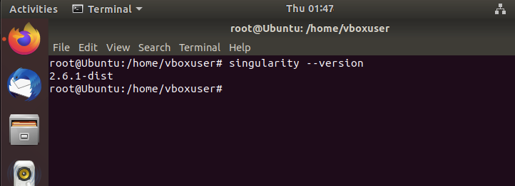
Step 4: MongoDB Server Instance
I deployed a MongoDB server instance within a Singularity container using the official MongoDB Docker image from Docker Hub. This containerized approach isolated the database service and provided a controlled environment for vulnerability assessment.
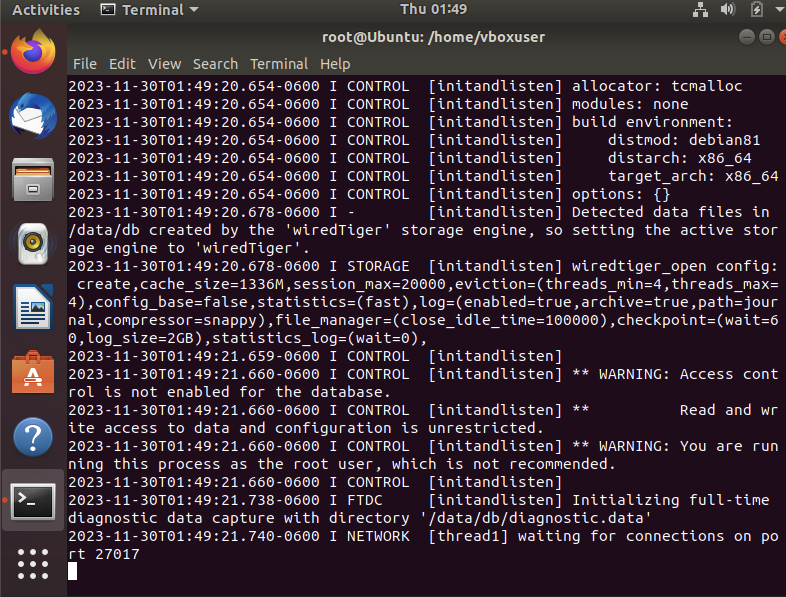
Step 5: MongoDB Client Connection
I configured a MongoDB client container to connect to the server instance, allowing database operations and service validation within the containerized environment.
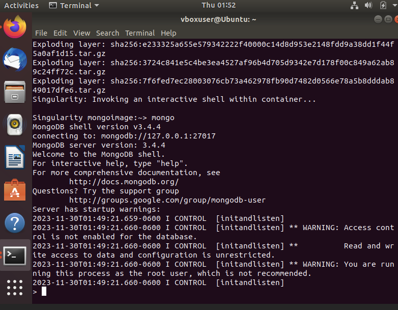
Step 6: OpenVAS Scanner Deployment
I deployed OpenVAS (Open Vulnerability Assessment System) as a Singularity container and successfully accessed its graphical user interface through a web browser. OpenVAS provided comprehensive vulnerability scanning capabilities with detailed reporting.
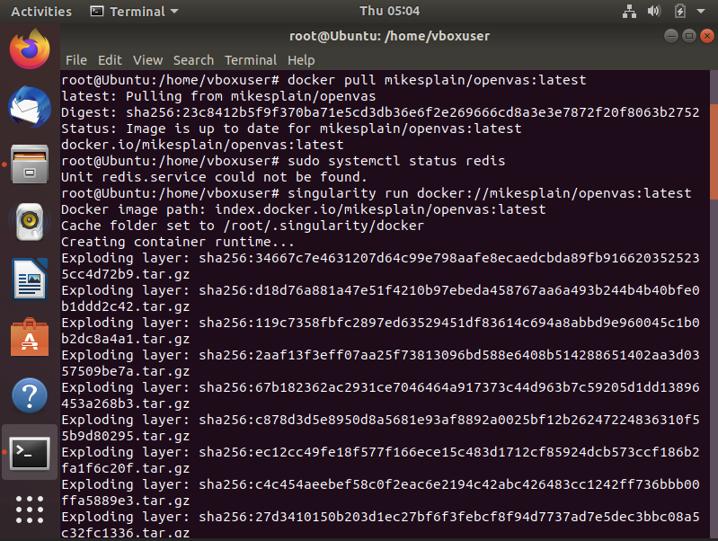
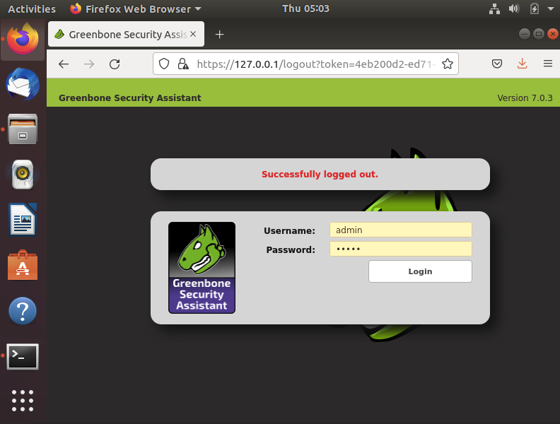
I performed vulnerability scans using OpenVAS against both the host system and localhost services. The scans analyzed exposed services and identified potential security weaknesses.
Due to performance constraints with the Greenbone OpenVAS vulnerability scanner (which experienced lag and slow response times), I supplemented the analysis with reports downloaded and processed for detailed vulnerability assessment.
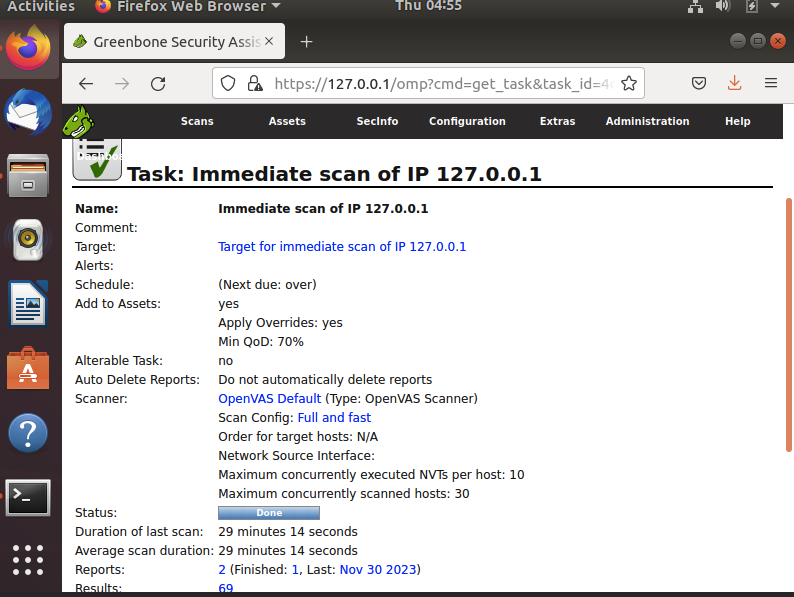
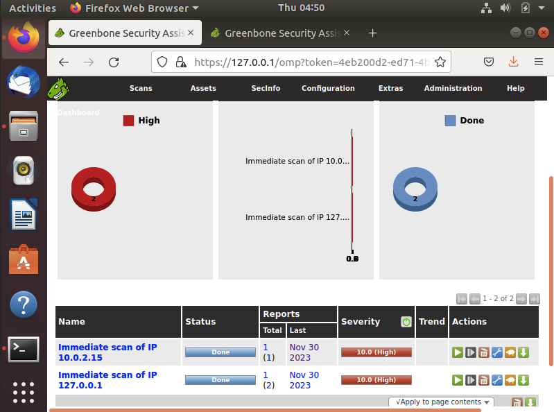
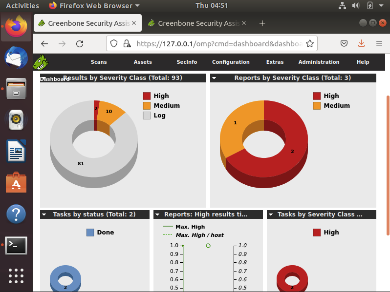
Through OpenVAS scanning, I identified vulnerabilities across multiple risk categories:
| # | Vulnerability | Risk Level | Location |
|---|---|---|---|
| 1 | Greenbone Vulnerabilities Manager Default Credentials | High | 9390/tcp |
| 2 | SSL/TLS: Certificate Expired | Medium | 443/tcp |
| 3 | SSL/TLS: Report Vulnerable Cipher Suites for HTTPS | Medium | 631/tcp |
| 4 | SSL/TLS: Certificates Signed Using Weak Signature Algorithm | Medium | 631/tcp |
| 5 | services Detection | Low | 631/tcp |
| 6 | SSL/TLS: Collect and Report Certificate Details | Low | 9390/tcp |
| 7 | CPE Inventory | Low | General |
| 8 | CUPS Version Detection | Low | 631/tcp |
| 9 | SSL/TLS: Perfect Forward Secrecy Cipher Suites Missing | Low | 9390/tcp |
| 10 | SSL/TLS: HTTP Strict Transport Security (HSTS) Missing | Low | 631/tcp |
| 11 | robot(s).txt Exists on Web Server | Low | 631/tcp |
| 12 | Service Detection with XML Request | Low | 9390/tcp |
| 13 | Wapiti (NASL wrapper) | Low | 631/tcp |
Key Finding: The high-risk default credentials vulnerability on port 9390 represents the most critical issue requiring immediate remediation through credential changes and access control hardening.
I executed vulnerability scans using Nessus, a leading vulnerability assessment platform, to cross-validate findings and identify additional security issues. Nessus provided a comprehensive view of system-level vulnerabilities affecting the Ubuntu host and exposed services.
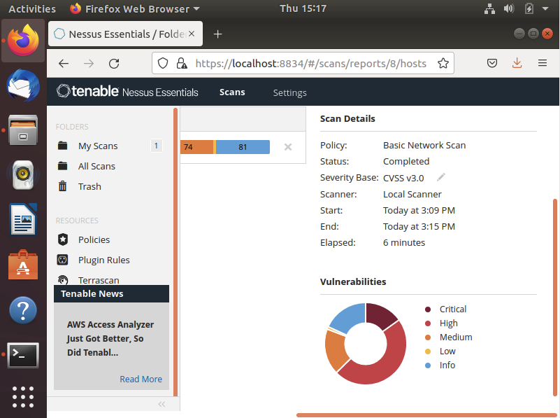
The OpenVAS scanner identified a total of 93 vulnerabilities across the scanned infrastructure. Here are the detailed results showing vulnerability classifications, severity distributions, and individual findings:
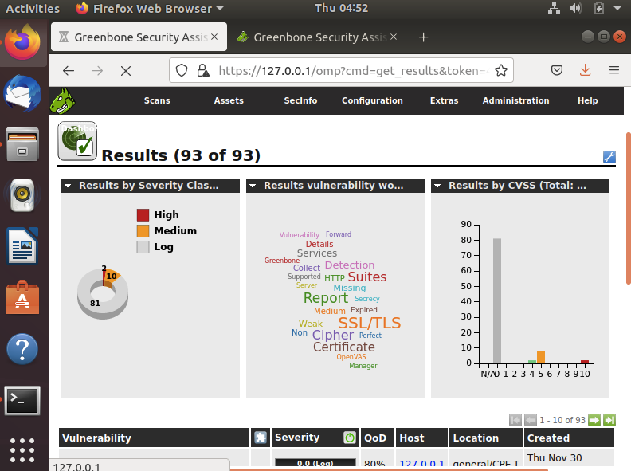
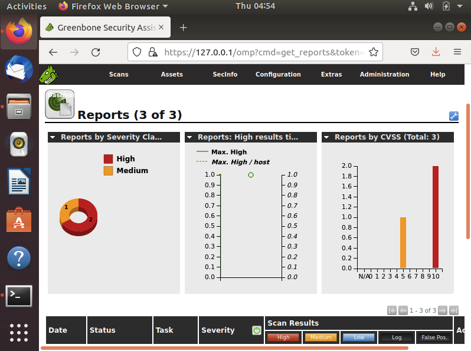
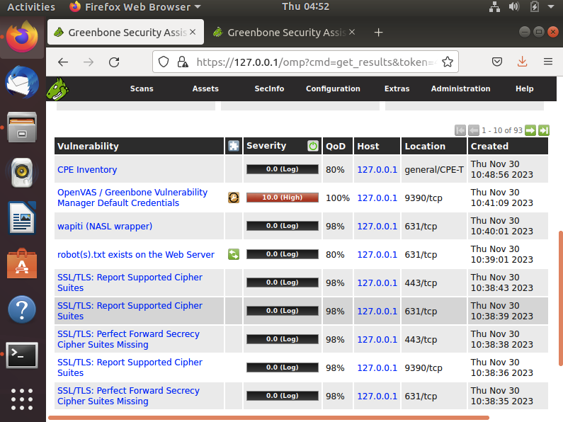
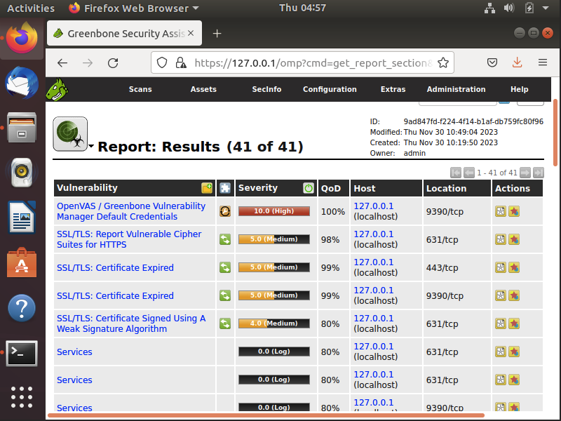
Nessus Essentials provided additional vulnerability coverage with its comprehensive scanning engine, identifying 43 vulnerabilities on the target host:
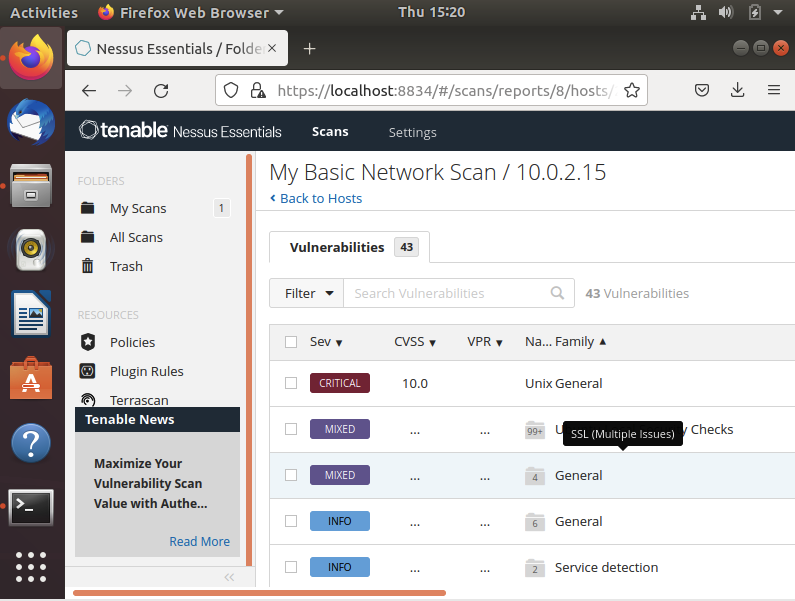
Nessus identified critical and high-risk vulnerabilities in the Ubuntu operating system and its components:
| # | Vulnerability | Risk Level | Location |
|---|---|---|---|
| 1 | Unix Operating System Unsupported Version Detection | Critical | 0/tcp |
| 2 | Ubuntu 18.04 LTS / 20.04 LTS: Firefox Vulnerabilities (USN-5107-1) | Critical | 0/tcp |
| 3 | Ubuntu 18.04 LTS / 20.04 LTS: Pillow Vulnerabilities (USN-5227-1) | Critical | 0/tcp |
| 4 | Ubuntu 18.04 LTS / 20.04 LTS: Libgcrypt Vulnerabilities (USN-5080-1) | High | 0/tcp |
| 5 | Ubuntu 18.04 ESM / 20.04 LTS: Linux Kernel Vulnerabilities (USN-6317-1) | High | 0/tcp |
| 6 | Ubuntu 16.04 ESM / 18.04 ESM / 20.04 LTS / 22.04 LTS: Vim Vulnerabilities (USN-6270-1) | High | 0/tcp |
| 7 | Ubuntu 18.04 LTS: Ghostscript Vulnerability (USN-5396-1) | High | 0/tcp |
| 8 | Ubuntu 18.04 LTS / 20.04 LTS / 22.04 LTS: curl Vulnerabilities (USN-5397-1) | High | 0/tcp |
| 9 | Ubuntu 18.04 LTS / 20.04 LTS / 22.04 LTS: CUPS Vulnerabilities (USN-5454-1) | Medium | 0/tcp |
| 10 | Ubuntu 18.04 ESM: poppler Regression (USN-6508-2) | Medium | 0/tcp |
| 11 | Ubuntu 16.04 ESM / 18.04 ESM: Python Vulnerabilities (USN-6513-1) | Medium | 0/tcp |
| 12 | Ubuntu 16.04 ESM / 18.04 ESM / 20.04 LTS / 22.04 LTS / 23.04 / 23.10: Avahi Vulnerabilities (USN-6487-1) | Medium | 0/tcp |
| 13 | Ubuntu 16.04 ESM / 18.04 ESM / 20.04 LTS / 22.04 LTS / 23.04 / 23.10: procps-ng Vulnerability (USN-6477-1) | Medium | 0/tcp |
| 14 | HTTP Server Type and Version | Low/Info | 8834/tcp |
| 15 | Nessus Server Detection | Low/Info | 8834/tcp |
| 16 | HyperText Transfer Protocol (HTTP) Information | Low/Info | 8834/tcp |
Critical Finding: The presence of critical-level vulnerabilities in Firefox and Pillow libraries, combined with an unsupported operating system version, represents significant security risks requiring system updates and patches.
I performed network reconnaissance using Nmap to identify active hosts, open ports, and running services. Nmap provided detailed service enumeration across the target infrastructure.
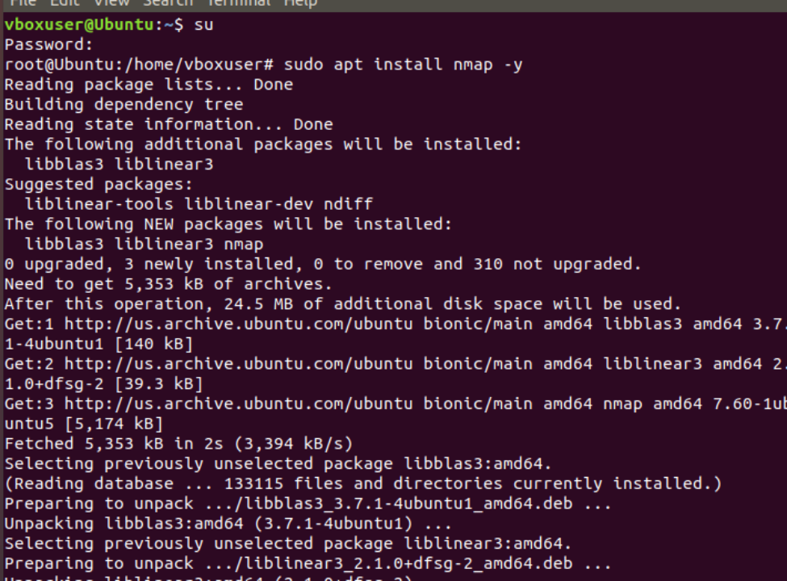
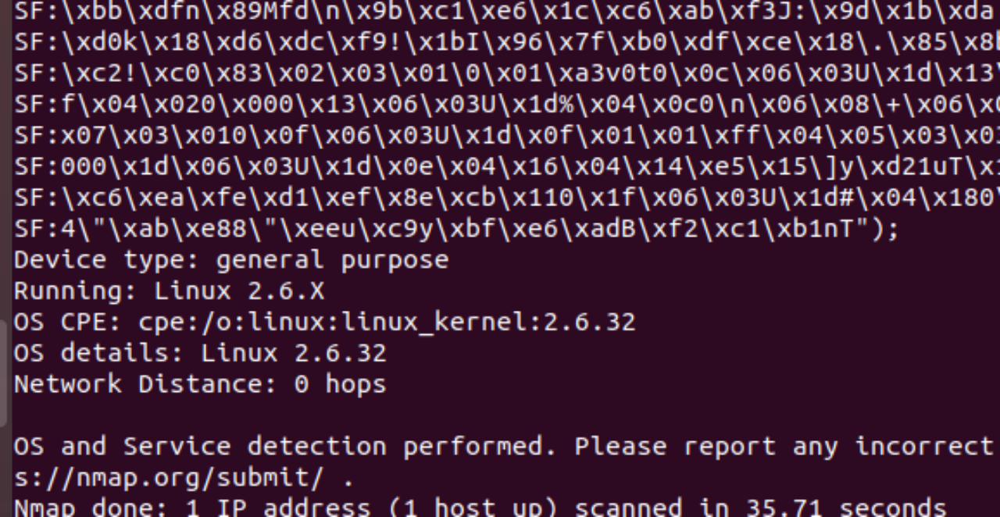
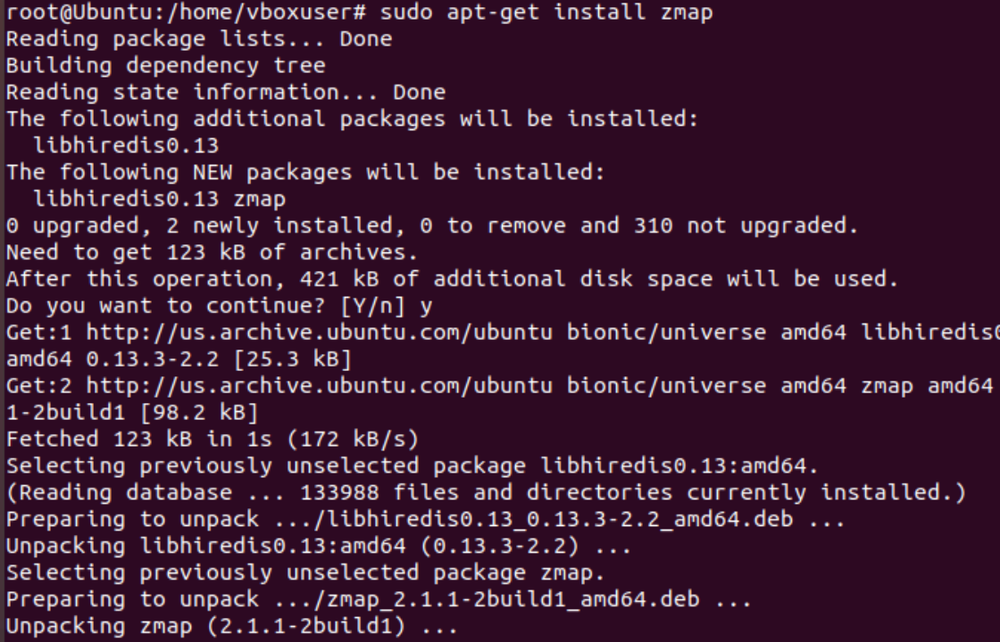
I used Zmap for rapid, internet-scale network scanning to complement Nmap's detailed analysis. Zmap provided efficient scanning of address space for exposed services.
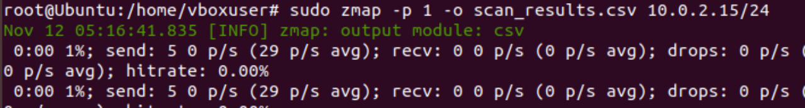
Through the multi-tool assessment approach, I identified several classes of vulnerabilities:
Authentication & Access Control Issues: - Default credentials on OpenVAS management interface (port 9390) - Weak access controls on exposed services
Cryptographic Weaknesses: - Expired SSL/TLS certificates requiring renewal - Vulnerable cipher suites in use - Weak signature algorithms for certificate generation - Missing Perfect Forward Secrecy (PFS) implementation
System-Level Vulnerabilities: - Outdated operating system with known unpatched vulnerabilities - Critical vulnerabilities in common utilities (Firefox, curl, Pillow) - Missing security patches and updates
Information Disclosure: - Unnecessary service information exposure - Missing security headers (HSTS) - Outdated robots.txt configuration
The vulnerability assessment revealed a distribution of risks across the infrastructure: - Critical: 3 vulnerabilities (OS version, Firefox, Pillow) - High: 5 vulnerabilities (system libraries and utilities) - Medium: 6 vulnerabilities (additional system components and utilities) - Low/Informational: 18 vulnerabilities (service detection and configuration)
Container Security Foundation: I demonstrated that container-based deployments require comprehensive security assessment across all layers—the containerized application, the host operating system, and exposed services.
Multi-Tool Validation: Using multiple vulnerability scanners (OpenVAS, Nessus, Nmap, Zmap) provided comprehensive coverage and cross-validation of findings, ensuring no critical issues were overlooked.
Patch Management Priority: System-level vulnerabilities in Ubuntu packages represent the most critical remediation priority, requiring timely security updates and regular maintenance cycles.
Certificate and Cryptography Management: SSL/TLS configuration issues, including expired certificates and weak cipher suites, require immediate attention to ensure encrypted communications and protect against man-in-the-middle attacks.
Default Configuration Risks: The presence of default credentials in management interfaces highlights the importance of secure configuration practices during deployment.
Continuous Assessment: Vulnerability assessment should be performed regularly throughout the deployment lifecycle, not just during initial setup, to identify newly discovered vulnerabilities and verify remediation effectiveness.